These field notes gather a few earlier moments that shaped my questions about labor, inequality, institutions, and collective life. They are not meant as a complete archive, but as fragments of experience that later found their way into my research and teaching.
Over time, many of these earlier experiences gradually evolved into research questions, classroom discussions, and empirical projects.
Today, my work focuses on labor markets, institutions, inequality, technology, migration, and platform labor. In my teaching, I try to connect quantitative reasoning to human experience and public life.
Experiences across different institutional and social settings — in Korea, Singapore, and the United States — continue to shape the comparative perspective through which I approach labor, inequality, and social change.
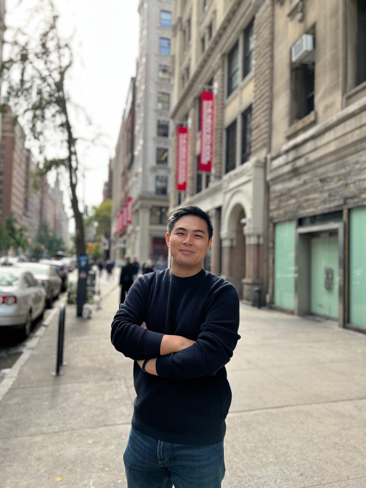
This photograph was taken during a period when I was briefly working in Korea as a research fellow before beginning my doctoral studies abroad. The area around the National Assembly is often filled with labor petitions, public demonstrations, and collective demands.
Many of my closest friends work as labor policy staffers, labor journalists, or union organizers. In a sense, we often end up meeting in the streets — not because we planned it that way, but because the field itself keeps bringing us back together.
It was also a friend’s birthday. On that day, the easiest place for all of us to gather happened to be a large public demonstration in front of the National Assembly.

During graduate school, I served as one of the representatives for the graduate student union at The New School. Around the same period, I also participated in solidarity actions supporting Columbia student workers during their contract strike.
What stayed with me most was not only the strike itself, but the emotional and institutional complexity of academic labor. On this day, my close friend Akhil delivered a solidarity speech that I still remember vividly.
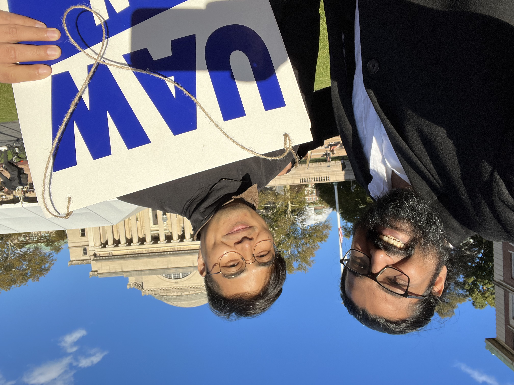
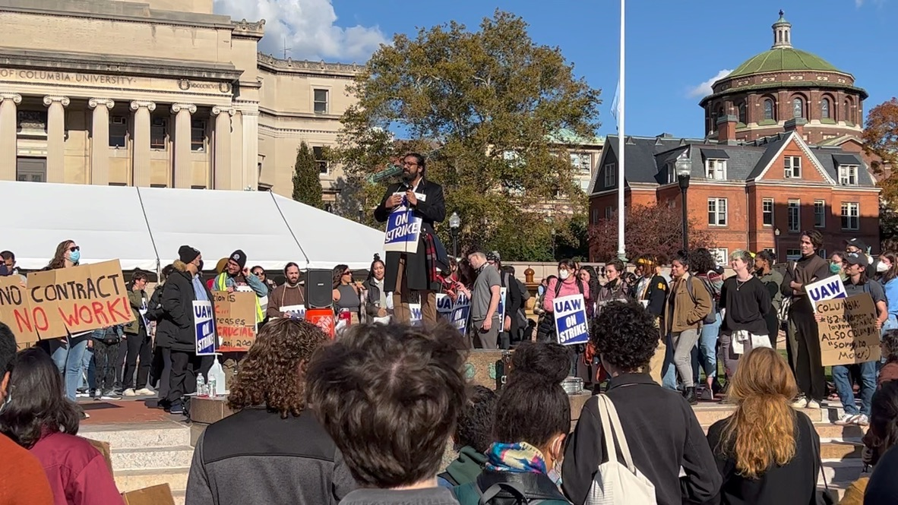
In the fall of 2021, I spent time observing the hunger strike organized by the New York Taxi Workers Alliance around medallion debt and platform restructuring.
I approached the space less as an organizer and more as a careful observer. I became interested in how collective action emerges in one of the world’s busiest cities, how solidarity is sustained over time, and how workers narrate injustice in one of the most unequal urban environments in the world.
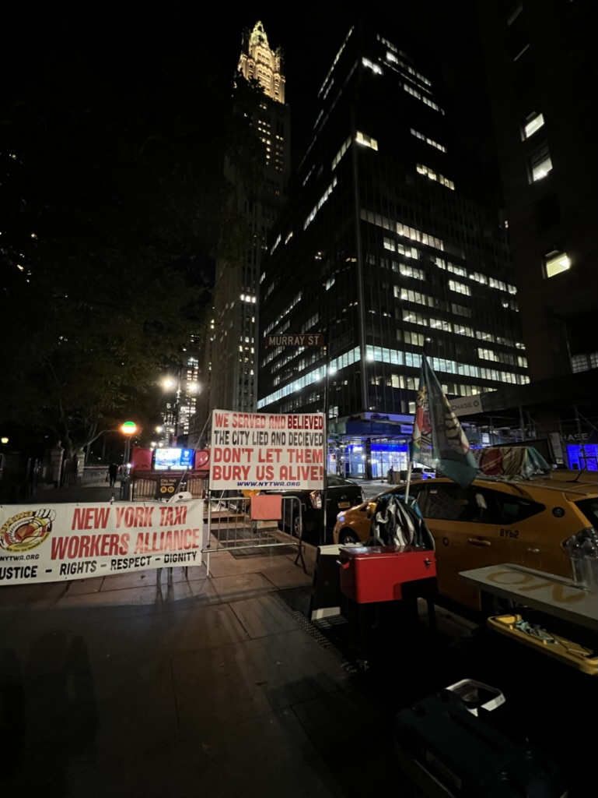
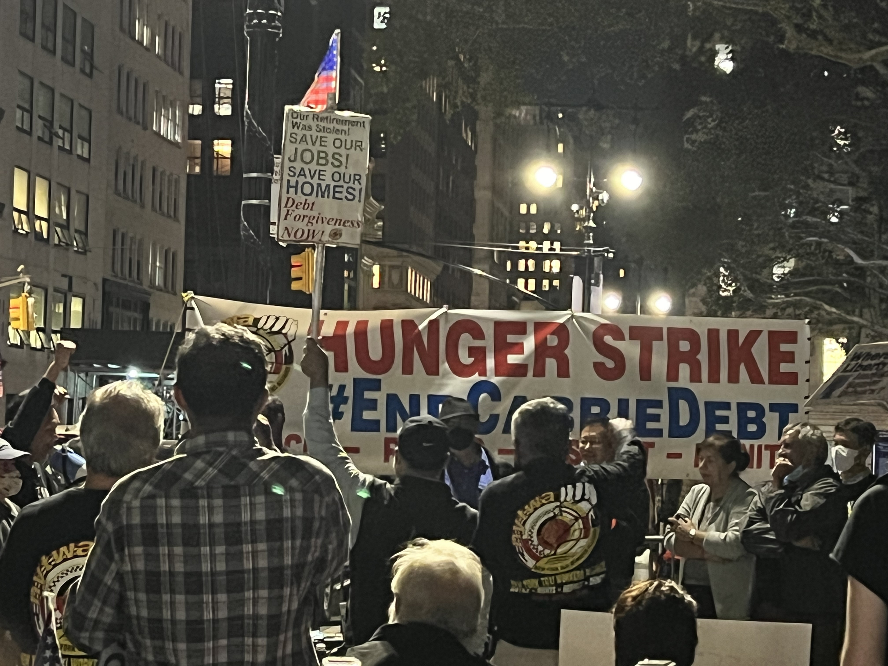
After completing my military service, I decided not to return to parliamentary politics and instead chose to pursue research and graduate study.
In 2017, during my master’s studies at Yonsei University and before beginning my doctoral studies in New York, I spent several months in Singapore as an exchange student and research fellow affiliated with the Lee Kuan Yew School of Public Policy at the National University of Singapore.
Living between Korea, Singapore, and later the United States deepened my interest in how different institutional systems organize labor, inequality, migration, and economic development in distinct ways.
What stayed with me most was not only the policy discussions themselves, but the contrast in everyday social organization, governance, and public life across different societies. Those experiences gradually strengthened my comparative perspective on labor markets and institutions.
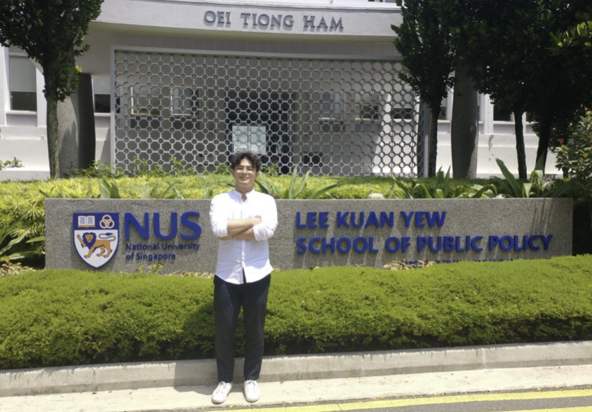
From 2010 to 2012, during a politically turbulent period under the Lee Myung-bak administration, I worked inside the National Assembly as a labor policy advisor.
Together with the Assembly member I supported, I traveled across Korea visiting disputed workplaces, meeting workers and union representatives, preparing policy materials, and participating in legislative discussions related to labor rights, workplace safety, and precarious employment.
Much of this work took place away from cameras — in policy meetings, legislative offices, temporary union spaces, and conversations with workers confronting institutional and economic insecurity.
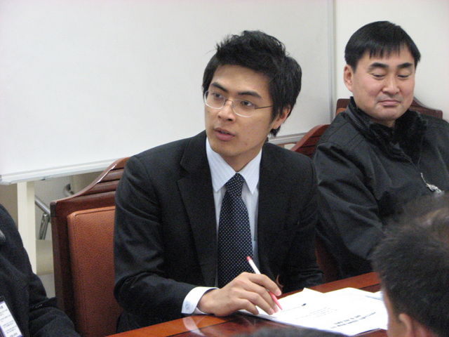
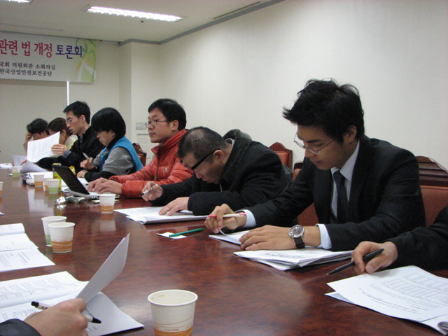
One of my earliest international experiences came through participation in protests surrounding the World Trade Organization meetings in Geneva. I joined as a university student, helping with interpretation work alongside Korean farmer organizations and international civil society groups.
It was my first time leaving Korea. What I remember most was not confrontation itself, but the contrast between the calmness of Switzerland and the intensity of nightly discussions taking place inside underground meeting spaces and temporary organizing rooms.
People from different countries, movements, and political traditions gathered together — often disagreeing strongly, yet still attempting to build common language and shared demands. That experience taught me that solidarity is often imperfect, negotiated, and still deeply meaningful.
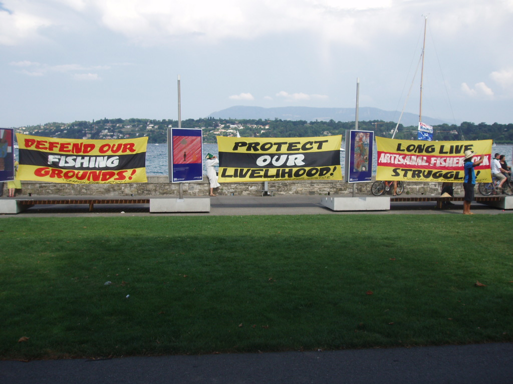
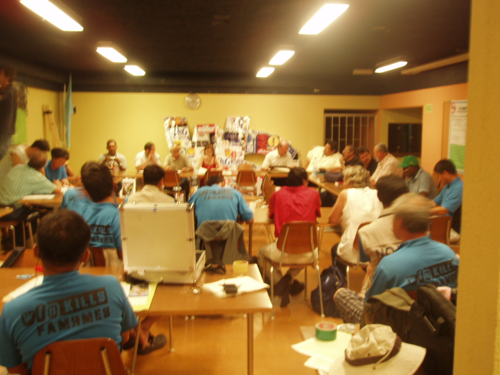
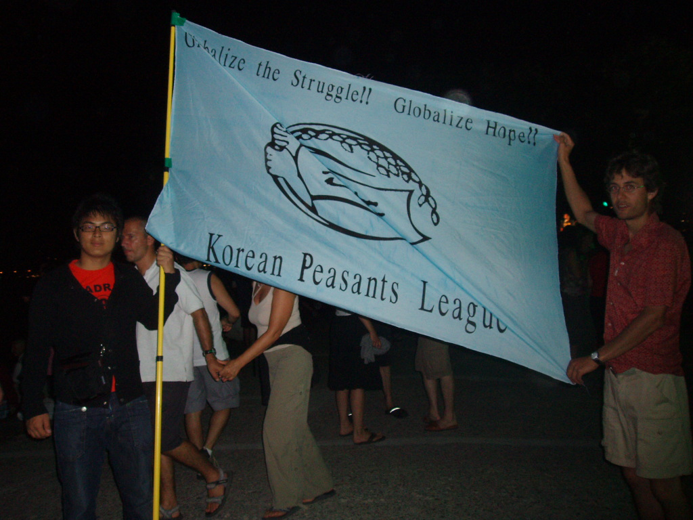
Ongoing Questions
They are simply fragments of observation, participation, and memory that gradually shaped the kinds of questions I continue to ask today — about labor, institutions, inequality, collective action, and human dignity.